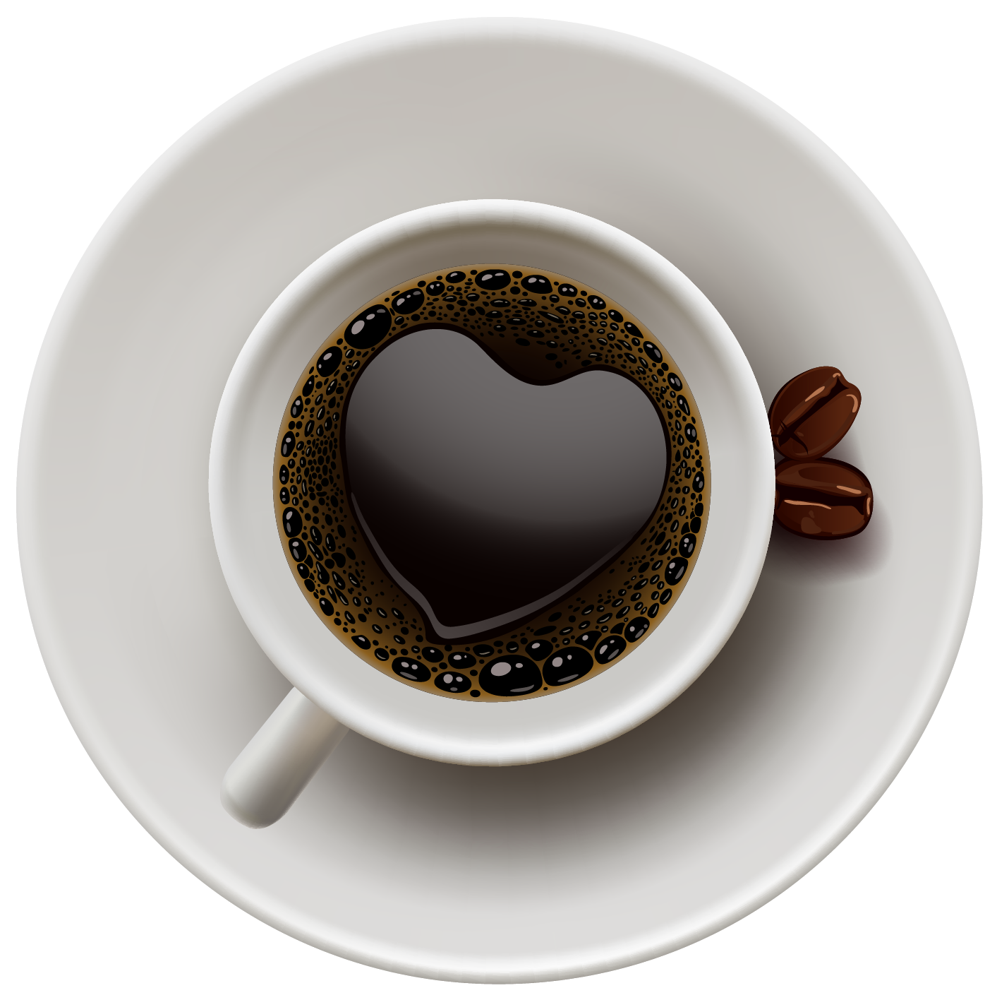

Boots your productivity and build your mood with a glass of coffe in the morning.Coffe has a stimulating effect.

Coffee is one of the most popular beverages in the world, enjoyed for its rich flavor and energizing effects.
Made from roasted coffee beans, it comes in various forms, including espresso, cappuccino, and latte.
Many people start their day with a cup of coffee to boost alertness and productivity, thanks to its caffeine content.
Beyond its stimulating effects, coffee is also packed with antioxidants and has been linked to several health benefits.